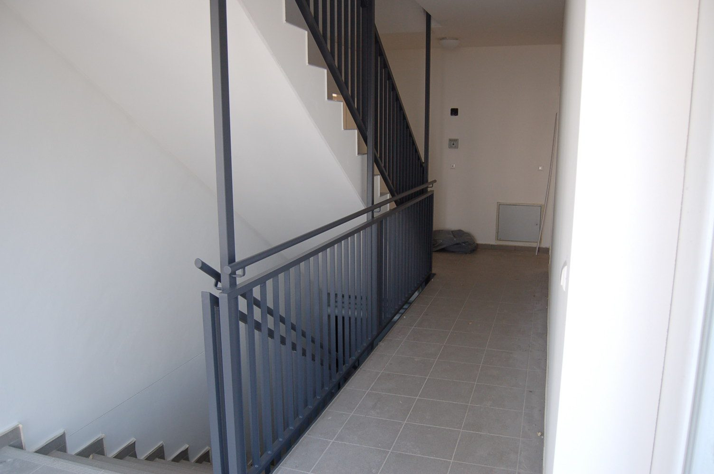
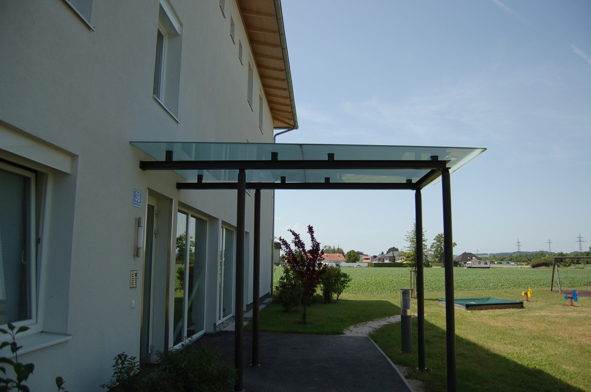

Geländer & Stiegen
- Geländer
- Stiegen
- Balkone
Arbeiten
Weil die Bauschlosserei nach individuellen Plänen arbeitet, sieht jede Arbeit anders aus. Zwei Beispiele aus dem bestehenden Bildmaterial des Betriebs – die Galerie wächst im Live-Betrieb mit jedem abgeschlossenen Projekt.


Ausführungen
Sie haben einen Plan, eine Skizze oder nur ein Foto? Beides genügt für eine erste Einschätzung. Anfrage mit Datei senden.
Beispiel Biegetechnik
Für Rundungen in Rohr, Formrohr sowie I- und T-Profilen stehen die Einrollmaschine PEM und die programmierbare Biegemaschine ERCOLINA zur Verfügung – bis D60/4 und 180°.
So entstehen Geländerbögen, gerundete Rahmen und Sonderteile, die sich aus geraden Profilen nicht bauen lassen.
Diese Vorschau zeigt das vorhandene Bildmaterial. Im laufenden Betrieb genügt künftig ein Foto vom Handy: Bild hochladen, zwei Zeilen dazu, fertig ist der neue Galerie-Eintrag – ohne Webdesigner und ohne Wartezeit.
Aus jeder fertigen Arbeit wird so ein Referenzbild, das neue Anfragen bringt.